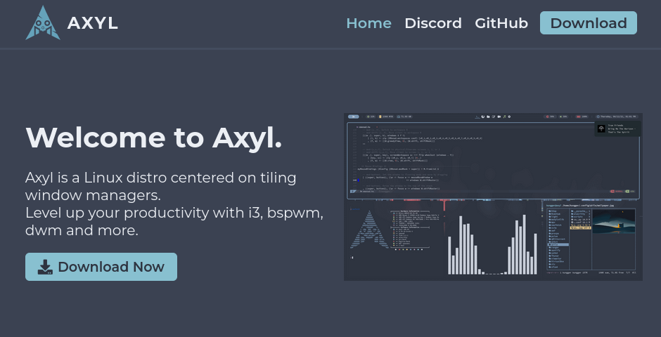
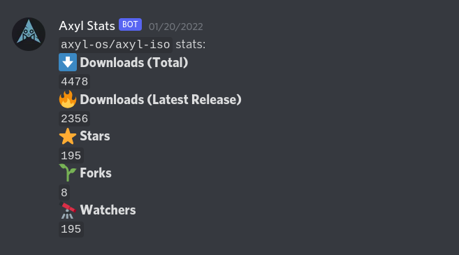
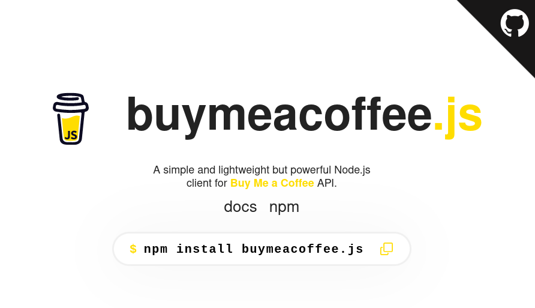

Projects
Some of my Best Works
treefetch
🌲 A comfy system fetch tool for Linux systems built with Rust, with over 700+ downloads. Available in openSUSE Factory and Pacstall.
Rust

Website - Axyl
🌊 Designed and deployed the website of Axyl, helping drive more than 3,000+ downloads.
HTML/CSS, Sass

Axyl Stats Bot
📉 Developed and deployed a Discord bot allowing 240+ members in the Axyl server to access metrics about the Axyl project (downloads, stars, etc).
Python, PostgreSQL

Landing Page - buymeacoffee.js
☕ Built the landing page for the official Node.js client for the Buy Me a Coffee API.
HTML/CSS

prideful
🌈 A terminal-based configurable Pride flag generator written in Rust.
Rust
Pomoff
🍅 A minimalist command-line Pomodoro timer, with configurable settings.
Python